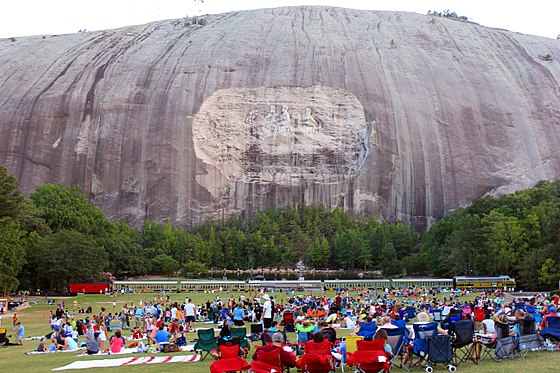

Stone Mountain is a quartz monzonite dome monadnock and the site of Stone Mountain Park near Stone Mountain, Georgia. At its summit, the elevation is 1,686 feet (514 m) MSL and 825 feet (251 m) above the surrounding area. Stone Mountain is well known for not only its geology, but also the enormous rock relief on its north face, the largest bas-relief in the world.[1]
Walk Up Trail: A 1.3-mile (2.1 km) trail to the top of Stone Mountain ascending 786 ft (240 m) in elevation to a height of 1,686 ft (514 m). The trail is steep, but spectacular panoramic views and cool winds await hikers at the top.
Cherokee Trail: A 5-mile (8 km) National Recreation Trail, the Cherokee Trail loops around the mountain base, with a mile section going up and over the west side of the mountain (crosses Walk Up Trail). It passes primarily through an oak-hickory forest, but views of the lakes, streams, and mountain are common.[45]
Nature Garden Trail: A scenic 3⁄4 mile (1.2 km) loop trail through a mature oak-hickory forest community, it is excellent for viewing shade-loving native plants. A small garden with interpretive native plant signs is at the entrance to the trail.
Songbird Habitat Trails: Comprising two loop trails each running 1 mile (1.6 km), the field trail is an excellent birding spot and the woodland trail provides shade and numerous native plants. Dogs are not allowed.
Information provided for fair use by wikipedia.com